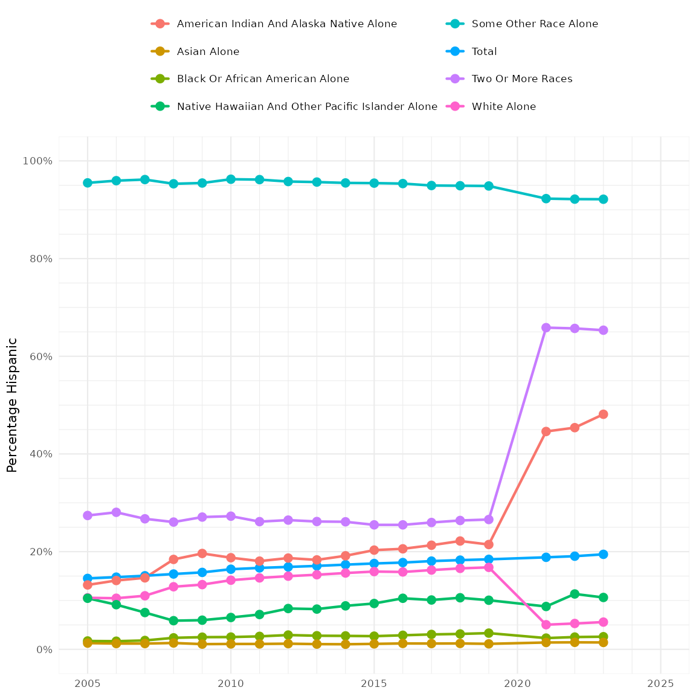

Race/Ethnicity Categories in ACS Tables
race_ethnicity_categories.RmdPreface
The American Community Survey API returns data in a very terse format. Each response contains four parts: geographic information, a table code, a row number, and a value. The geographic information varies by the level of detail one asks for. The value is a number that may be a population size, number of households, an income in dollars, a percentage, or several other quantities. The table code and row number are what determine the exact meaning of the value.
Generally speaking, all of the values in a table will be reporting the same kind of information. Again, the information might be counts of people or households, incomes or costs in dollars, hours commuting or working, or a percentage of just about anything. The row numbers then let you know what group of people the information is for. The first row always has a value for the entire population of a geographic area. Subsequent rows may have information about a very specific subgroup, or may contain a summary value for a combination of subgroups. For example, in a sex-and-age table, you might find the value for all men and boys (males) in row 2, then the value for boys under 5 in row 3. In short, a lot of information is packed into the two fields of table name and row number.
While packing information is efficient for storing and transmitting
data, it means that users of Census information must unpack things in
order to be clear. The hercacstables package has many tools
and metadata tables that should make it easier and more convenient to
unpack Census data.
Racial and ethnic categories in the American Community Survey
This vignette describes some features of hercacstables
that help with the common and repetitive chores of unpacking racial and
ethnic data from Census API responses. The Census has several ways that
it reports by racial and ethnic identity. They do not always all agree
or line up. That makes sense because the concepts of race and ethnicity
are slippery, changing across place and time.
Broad strokes by the Census
The first racial/ethnic system that we will discuss involves ten categories. There are seven categories of race, one of ethnicity, one that combines both, and an “All” category: “Total”, “White alone”, “Black or African American alone”, “American Indian and Alaska Native alone”, “Asian alone”, “Native Hawaiian and Other Pacific Islander alone”, “Some Other Race alone”, “Two or More Races”, “White alone, not Hispanic or Latino”, and “Hispanic or Latino”. This is a very coarse and unsophisticated way of characterizing identities. Nevertheless, it occurs throughout the American Community Survey.
Subtable categories of race and ethnicity
There are 57 separate sets of tables that subdivide their information according to this ten-category scheme. Each identity is designated by a suffix at the end of a table’s name. In other words, all of the values from a table with one of these suffixes in its name will pertain to people of just one racial/ethnic category.
Since the case is so common, hercacstables describes it
with the metadata table
hercacstables::RACE_ETHNICITY_SUBTABLE_METADATA. It maps
from the suffix in a table’s name to the racial/ethnic category the
table describes.
| Census Race | Suffix |
|---|---|
| TOTAL | |
| WHITE ALONE | A |
| BLACK OR AFRICAN AMERICAN ALONE | B |
| AMERICAN INDIAN AND ALASKA NATIVE ALONE | C |
| ASIAN ALONE | D |
| NATIVE HAWAIIAN AND OTHER PACIFIC ISLANDER ALONE | E |
| SOME OTHER RACE ALONE | F |
| TWO OR MORE RACES | G |
| WHITE ALONE, NOT HISPANIC OR LATINO | H |
| HISPANIC OR LATINO | I |
Tables with “RACE” in their description
There are also 0 tables that have the word “RACE” in their description.
| Group | Description | rows |
|---|
They seem to fall into four categories. There are two tables with 10
rows each, B02001 and B25006. These are
probably convenience tables that pull data from other race-specific
subtables. Six tables, B02008 through B020013,
have only one row each. These seem to report inclusive counts, combining
people who claim a racial identity either as their sole identity or in
combination with another. One table, B03002, has 21 rows.
This table appears to report detailed information about Hispanic
ethnicity and specific racial identities. Tables B98013 and
B99021 have descriptions that suggest that they report
methodological details. Each of these categories of table deserves a
little more discussion.
Convenience tables
Tables B02001 and B25006 deal with counts
of individuals and households, respectively. They seem to be redundant,
showing the first rows of the tables in the B01001 and
B11001, respectively.
We can use hercacstables to check that.
Map meaning to Census Variables
The first step is to make a table that connects the Census’s opaque
variable names to the real-world meanings that we are interested in. For
example, tables B01001* and B02001 deal with
counts of people, while tables B11001* and
B25006 deal with counts of households. Similarly, the
racial identity being counted is defined either by the subtable suffix
or the row number. Finally, we are interested in whether the data come
from, a subtable or a convenience table. We can lay that all out in a
way that “maps” from the Census variable to the real-world meaning.
convenience_check_variables <- tibble::tribble(
~ Table, ~ Suffix, ~ Index, ~ Population, ~ Race,
"B01001", "A", 1, "People", "White",
"B01001", "B", 1, "People", "Black",
"B02001", "", 2, "People", "White",
"B02001", "", 3, "People", "Black",
"B11001", "A", 1, "Households", "White",
"B11001", "B", 1, "Households", "Black",
"B25006", "", 2, "Households", "White",
"B25006", "", 3, "Households", "Black"
) |>
dplyr::mutate(
Group = paste0(.data$Table, .data$Suffix),
Variable = hercacstables::build_api_variable(group_code = .data$Table,
race_code = .data$Suffix,
item_number = .data$Index),
`Table Type` = dplyr::if_else(nchar(.data$Suffix) > 0,
"Subtable",
"Convenience")
)
knitr::kable(convenience_check_variables)| Table | Suffix | Index | Population | Race | Group | Variable | Table Type |
|---|---|---|---|---|---|---|---|
| B01001 | A | 1 | People | White | B01001A | B01001A_001E | Subtable |
| B01001 | B | 1 | People | Black | B01001B | B01001B_001E | Subtable |
| B02001 | 2 | People | White | B02001 | B02001_002E | Convenience | |
| B02001 | 3 | People | Black | B02001 | B02001_003E | Convenience | |
| B11001 | A | 1 | Households | White | B11001A | B11001A_001E | Subtable |
| B11001 | B | 1 | Households | Black | B11001B | B11001B_001E | Subtable |
| B25006 | 2 | Households | White | B25006 | B25006_002E | Convenience | |
| B25006 | 3 | Households | Black | B25006 | B25006_003E | Convenience |
Fetch the raw data
With our variables defined, we can fetch the data from the Census API. Notice that, since this is an API call, the code block is set to cache its results. API calls are much slower than local functions, so it is usually a good idea to isolate them and run them as few times as possible.
convenience_check_values_raw <- hercacstables::fetch_data(
convenience_check_variables$Variable,
year = LATEST_YEAR - 2L, # the most recent one available at the time of writing
for_geo = "us", # the entire nation
for_items = "*", # all nation-level geographies
survey_type = "acs", # as opposed to, e.g. "dec," for Decennial survey data
table_or_survey_code = "acs5" # the specific survey is the 5-year ACS.
)Examine values in context
Now that we have the raw data, we can check to see if the values from the convenience tables do, in fact, match up with the values from the subtables.
convenience_check_values <- convenience_check_values_raw |>
dplyr::inner_join(
convenience_check_variables,
by = c("Group", "Index")
) |>
dplyr::select(
"Population",
"Race",
"Table Type",
"Value"
) |>
tidyr::pivot_wider(
names_from = "Table Type",
values_from = "Value"
) |>
dplyr::mutate(
Identical = dplyr::if_else(.data$Subtable == .data$Convenience,
"Yes",
"No")
)
convenience_check_values |>
dplyr::mutate(
dplyr::across(tidyselect::all_of(c("Subtable", "Convenience")),
scales::label_comma(accuracy = 1))
) |>
knitr::kable(
align = "llrrl"
)| Population | Race | Subtable | Convenience | Identical |
|---|---|---|---|---|
| People | White | 218,123,424 | 218,123,424 | Yes |
| People | Black | 41,288,572 | 41,288,572 | Yes |
| Households | White | 89,093,698 | 89,093,698 | Yes |
| Households | Black | 15,396,339 | 15,396,339 | Yes |
We don’t have to include any of the confusing “Group,” “Index,” or “Variable” columns in our final result.
Inclusive identity counts
Six others, tables “B02008” through “B02013”, show the numbers of people who identified with specific races and ethnicities. The totals from these tables will be larger than the US population because someone who identified with more than one category will be counted in each corresponding table.
These tables correspond to six of the ten broad categories of
race/ethnicity, so they are actually already in
RACE_ETHNICITY_SUBTABLE_METADATA. I just hid them before
because it would have been confusing.
| Census Race | Suffix | Inclusive Group |
|---|---|---|
| TOTAL | ||
| WHITE ALONE | A | B02008 |
| BLACK OR AFRICAN AMERICAN ALONE | B | B02009 |
| AMERICAN INDIAN AND ALASKA NATIVE ALONE | C | B02010 |
| ASIAN ALONE | D | B02011 |
| NATIVE HAWAIIAN AND OTHER PACIFIC ISLANDER ALONE | E | B02012 |
| SOME OTHER RACE ALONE | F | B02013 |
| TWO OR MORE RACES | G | |
| WHITE ALONE, NOT HISPANIC OR LATINO | H | |
| HISPANIC OR LATINO | I |
The population reported in the inclusive tables should be as large,
or larger, than the population reported in the exclusive tables. We can
use hercacstables to check this, too.
Census variables for inclusive and exclusive counts
incl_excl_pop_variables <- hercacstables::RACE_ETHNICITY_SUBTABLE_METADATA |>
dplyr::filter(
nchar(.data$`Inclusive Group`) > 0
) |>
dplyr::mutate(
`Exclusive Group` = paste0("B01001", .data$Suffix)
) |>
dplyr::select(
"Census Race",
Inclusive = "Inclusive Group",
Exclusive = "Exclusive Group"
) |>
tidyr::pivot_longer(
cols = tidyselect::ends_with("clusive"),
names_to = "Type of count",
values_to = "Group"
) |>
dplyr::mutate(
Variable = hercacstables::build_api_variable(.data$Group, 1)
)
knitr::kable(incl_excl_pop_variables)| Census Race | Type of count | Group | Variable |
|---|---|---|---|
| WHITE ALONE | Inclusive | B02008 | B02008_001E |
| WHITE ALONE | Exclusive | B01001A | B01001A_001E |
| BLACK OR AFRICAN AMERICAN ALONE | Inclusive | B02009 | B02009_001E |
| BLACK OR AFRICAN AMERICAN ALONE | Exclusive | B01001B | B01001B_001E |
| AMERICAN INDIAN AND ALASKA NATIVE ALONE | Inclusive | B02010 | B02010_001E |
| AMERICAN INDIAN AND ALASKA NATIVE ALONE | Exclusive | B01001C | B01001C_001E |
| ASIAN ALONE | Inclusive | B02011 | B02011_001E |
| ASIAN ALONE | Exclusive | B01001D | B01001D_001E |
| NATIVE HAWAIIAN AND OTHER PACIFIC ISLANDER ALONE | Inclusive | B02012 | B02012_001E |
| NATIVE HAWAIIAN AND OTHER PACIFIC ISLANDER ALONE | Exclusive | B01001E | B01001E_001E |
| SOME OTHER RACE ALONE | Inclusive | B02013 | B02013_001E |
| SOME OTHER RACE ALONE | Exclusive | B01001F | B01001F_001E |
Raw inclusive and exclusive counts
incl_excl_pop_values_raw <- hercacstables::fetch_data(
variables = incl_excl_pop_variables$Variable,
year = 2022,
for_geo = "us",
for_items = "*",
survey_type = "acs",
table_or_survey_code = "acs5"
)Comparing inclusive and exclusive counts
incl_excl_pop_values <- incl_excl_pop_values_raw |>
dplyr::inner_join(
incl_excl_pop_variables,
by = c("Group")
) |>
dplyr::select(
"Census Race",
"Type of count",
"Value"
) |>
tidyr::pivot_wider(
names_from = "Type of count",
values_from = "Value"
) |>
dplyr::mutate(
Difference = .data$Inclusive - .data$Exclusive,
`Percent Multiracial` = .data$Difference / .data$Inclusive
) |>
dplyr::arrange(
dplyr::desc(.data$Inclusive)
)
incl_excl_pop_values |>
dplyr::mutate(
dplyr::across(tidyselect::all_of(c("Inclusive",
"Exclusive",
"Difference")),
scales::label_comma(accuracy = 1)),
`Percent Multiracial` = scales::label_percent(accuracy = 1)(
.data$`Percent Multiracial`
)
) |>
knitr::kable(
align = "lrrrr"
)| Census Race | Inclusive | Exclusive | Difference | Percent Multiracial |
|---|---|---|---|---|
| WHITE ALONE | 244,954,342 | 218,123,424 | 26,830,918 | 11% |
| BLACK OR AFRICAN AMERICAN ALONE | 47,498,346 | 41,288,572 | 6,209,774 | 13% |
| SOME OTHER RACE ALONE | 38,354,036 | 20,018,544 | 18,335,492 | 48% |
| ASIAN ALONE | 23,330,887 | 19,112,979 | 4,217,908 | 18% |
| AMERICAN INDIAN AND ALASKA NATIVE ALONE | 6,749,000 | 2,786,431 | 3,962,569 | 59% |
| NATIVE HAWAIIAN AND OTHER PACIFIC ISLANDER ALONE | 1,513,124 | 624,863 | 888,261 | 59% |
Hispanic ethnicity and broad racial identity
Table B03002 contains counts of people by Hispanic
ethnicity for each of the ten broad racial identities. As always, the
first row is the total population size. There are then two groups of
rows. Rows 2-11 count people who are not Hispanic. Rows 12-21 count
people who identify as Hispanic. Rows 2 and 12 are the total populations
of non-Hispanic and Hispanic people. Rows 10, 11, 20, and 21 contain
subgroupings that distinguish between people who identify as biracial
and those who identify as multiracial.
That means that we can take rows one through eight of
hercacstables::RACE_ETHNICITY_SUBTABLE_METADATA and map
them onto rows in B03002. In fact, this is so useful that
it is also included in
hercacstables::RACE_ETHNICITY_SUBTABLE_METADATA.
| Census Race | non-Hispanic | Hispanic |
|---|---|---|
| TOTAL | B03002_002E | B03002_012E |
| WHITE ALONE | B03002_003E | B03002_013E |
| BLACK OR AFRICAN AMERICAN ALONE | B03002_004E | B03002_014E |
| AMERICAN INDIAN AND ALASKA NATIVE ALONE | B03002_005E | B03002_015E |
| ASIAN ALONE | B03002_006E | B03002_016E |
| NATIVE HAWAIIAN AND OTHER PACIFIC ISLANDER ALONE | B03002_007E | B03002_017E |
| SOME OTHER RACE ALONE | B03002_008E | B03002_018E |
| TWO OR MORE RACES | B03002_009E | B03002_019E |
Let’s use these to look at nationwide trends across racial identities in their percentages of Hispanic ethnicity.
First, we will define our metadata table.
hispanic_and_broad_race_variables <- hercacstables::RACE_ETHNICITY_SUBTABLE_METADATA |>
dplyr::filter(
nchar(.data$`non-Hispanic`) > 0
) |>
dplyr::select(
"Census Race",
"non-Hispanic",
"Hispanic"
) |>
tidyr::pivot_longer(
cols = tidyselect::ends_with("Hispanic"),
names_to = "Ethnicity",
values_to = "Variable"
) |>
tidyr::separate_wider_position(
cols = "Variable",
widths = c(Group = 6, 1,
Index = 3, 1),
cols_remove = FALSE
) |>
dplyr::mutate(
Index = as.integer(.data$Index)
)
knitr::kable(hispanic_and_broad_race_variables)| Census Race | Ethnicity | Group | Index | Variable |
|---|---|---|---|---|
| TOTAL | non-Hispanic | B03002 | 2 | B03002_002E |
| TOTAL | Hispanic | B03002 | 12 | B03002_012E |
| WHITE ALONE | non-Hispanic | B03002 | 3 | B03002_003E |
| WHITE ALONE | Hispanic | B03002 | 13 | B03002_013E |
| BLACK OR AFRICAN AMERICAN ALONE | non-Hispanic | B03002 | 4 | B03002_004E |
| BLACK OR AFRICAN AMERICAN ALONE | Hispanic | B03002 | 14 | B03002_014E |
| AMERICAN INDIAN AND ALASKA NATIVE ALONE | non-Hispanic | B03002 | 5 | B03002_005E |
| AMERICAN INDIAN AND ALASKA NATIVE ALONE | Hispanic | B03002 | 15 | B03002_015E |
| ASIAN ALONE | non-Hispanic | B03002 | 6 | B03002_006E |
| ASIAN ALONE | Hispanic | B03002 | 16 | B03002_016E |
| NATIVE HAWAIIAN AND OTHER PACIFIC ISLANDER ALONE | non-Hispanic | B03002 | 7 | B03002_007E |
| NATIVE HAWAIIAN AND OTHER PACIFIC ISLANDER ALONE | Hispanic | B03002 | 17 | B03002_017E |
| SOME OTHER RACE ALONE | non-Hispanic | B03002 | 8 | B03002_008E |
| SOME OTHER RACE ALONE | Hispanic | B03002 | 18 | B03002_018E |
| TWO OR MORE RACES | non-Hispanic | B03002 | 9 | B03002_009E |
| TWO OR MORE RACES | Hispanic | B03002 | 19 | B03002_019E |
Next, we pull 18 years of ACS data.
hispanic_and_broad_race_raw <- c(2009:2019, 2021:(LATEST_YEAR - 1)) |>
purrr::map(
~ hercacstables::fetch_data(
hispanic_and_broad_race_variables$Variable,
year = .,
for_geo = "us",
for_items = "*",
survey_type = "acs",
table_or_survey_code = "acs1"
)
)Then, we put the data into a nice, tidy format.
hispanic_and_broad_race <- hispanic_and_broad_race_raw |>
purrr::list_rbind() |>
dplyr::inner_join(
hispanic_and_broad_race_variables,
by = "Index"
) |>
dplyr::select(
"Census Race",
"Ethnicity",
"Year",
"Value"
) |>
tidyr::pivot_wider(
names_from = "Ethnicity",
values_from = "Value",
values_fill = 0
) |>
dplyr::mutate(
Total = .data$Hispanic + .data$`non-Hispanic`,
`Percent Hispanic` = .data$Hispanic / .data$Total
)
hispanic_and_broad_race |>
dplyr::slice_sample(
n = 1,
by = "Year"
) |>
dplyr::mutate(
dplyr::across(c("Hispanic", "non-Hispanic", "Total"),
scales::label_comma(accuracy = 1)),
dplyr::across("Percent Hispanic",
scales::label_percent(accuracy = 1))
) |>
knitr::kable(
align = "lrrrrr"
)| Census Race | Year | non-Hispanic | Hispanic | Total | Percent Hispanic |
|---|---|---|---|---|---|
| ASIAN ALONE | 2009 | 13,627,633 | 146,978 | 13,774,611 | 1% |
| SOME OTHER RACE ALONE | 2010 | 558,211 | 14,331,229 | 14,889,440 | 96% |
| AMERICAN INDIAN AND ALASKA NATIVE ALONE | 2011 | 2,086,995 | 460,011 | 2,547,006 | 18% |
| SOME OTHER RACE ALONE | 2012 | 614,725 | 13,947,953 | 14,562,678 | 96% |
| ASIAN ALONE | 2013 | 15,841,339 | 170,781 | 16,012,120 | 1% |
| NATIVE HAWAIIAN AND OTHER PACIFIC ISLANDER ALONE | 2014 | 507,550 | 49,604 | 557,154 | 9% |
| SOME OTHER RACE ALONE | 2015 | 699,309 | 14,676,633 | 15,375,942 | 95% |
| SOME OTHER RACE ALONE | 2016 | 758,275 | 15,576,077 | 16,334,352 | 95% |
| SOME OTHER RACE ALONE | 2017 | 833,898 | 15,719,042 | 16,552,940 | 95% |
| AMERICAN INDIAN AND ALASKA NATIVE ALONE | 2018 | 2,180,266 | 621,321 | 2,801,587 | 22% |
| NATIVE HAWAIIAN AND OTHER PACIFIC ISLANDER ALONE | 2019 | 565,473 | 63,210 | 628,683 | 10% |
| TOTAL | 2021 | 269,364,681 | 62,529,064 | 331,893,745 | 19% |
| ASIAN ALONE | 2022 | 19,415,251 | 281,729 | 19,696,980 | 1% |
| ASIAN ALONE | 2023 | 19,769,752 | 282,571 | 20,052,323 | 1% |
Finally, we plot it
hispanic_and_broad_race |>
dplyr::mutate(
`Census Race` = stringr::str_to_title(.data$`Census Race`)
) |>
ggplot2::ggplot(
ggplot2::aes(x = .data$Year,
y = .data$`Percent Hispanic`,
color = .data$`Census Race`)
) +
ggplot2::geom_line(
linewidth = 1,
lineend = "round",
linejoin = "mitre"
) +
ggplot2::geom_point(
size = 3
) +
ggplot2::scale_x_continuous(
name = NULL,
labels = scales::label_number(big.mark = ""),
limits = c(2005, 2025),
breaks = scales::breaks_width(5),
minor_breaks = scales::breaks_width(1)
) +
ggplot2::scale_y_continuous(
name = "Percentage Hispanic",
labels = scales::label_percent(accuracy = 1),
limits = c(0, 1),
breaks = scales::breaks_width(0.2),
minor_breaks = scales::breaks_width(0.05)
) +
ggplot2::scale_color_discrete(
guide = ggplot2::guide_legend(
title = NULL,
position = "top",
nrow = 4
)
) +
ggplot2::theme_minimal()
Appendix
Subtables of race and ethnicity
| Group | Description |
|---|---|
| B01001 | Sex by Age (Hispanic or Latino) |
| B01002 | Median Age by Sex (Hispanic or Latino) |
| B05003 | Sex by Age by Nativity and Citizenship Status (Hispanic or Latino) |
| B06004 | Place of Birth (Hispanic or Latino) in the United States |
| B07004 | Geographical Mobility in the Past Year (Hispanic or Latino) for Current Residence in the United States |
| B07404 | Geographical Mobility in the Past Year (Hispanic or Latino) for Residence 1 Year Ago in the United States |
| B08105 | Means of Transportation to Work (Hispanic or Latino) |
| B08505 | Means of Transportation to Work for Workplace Geography (Hispanic or Latino) |
| B10051 | Grandparents Living With Own Grandchildren Under 18 Years by Responsibility for Own Grandchildren and Age of Grandparent (Hispanic or Latino) |
| B11001 | Household Type (Including Living Alone) (Hispanic or Latino) |
| B11002 | Household Type by Relatives and Nonrelatives for Population in Households (Hispanic or Latino) |
| B12002 | Sex by Marital Status for the Population 15 Years and Over (Hispanic or Latino) |
| B12007 | Median Age at First Marriage (Hispanic or Latino) |
| B13002 | Women 15 to 50 Years Who Had a Birth in the Past 12 Months by Marital Status (Hispanic or Latino) |
| B14007 | School Enrollment by Detailed Level of School for the Population 3 Years and Over (Hispanic or Latino) |
| B15002 | Sex by Educational Attainment for the Population 25 Years and Over (Hispanic or Latino) |
| B16005 | Nativity by Language Spoken at Home by Ability to Speak English for the Population 5 Years and Over (Hispanic or Latino) |
| B17001 | Poverty Status in the Past 12 Months by Sex by Age (Hispanic or Latino) |
| B17010 | Poverty Status in the Past 12 Months of Families by Family Type by Presence of Related Children Under 18 Years by Age of Related Children (Hispanic or Latino) |
| B17020 | Poverty Status in the Past 12 Months by Age (Hispanic or Latino) |
| B18101 | Age by Disability Status (Hispanic or Latino) |
| B19001 | Household Income in the Past 12 Months (Hispanic or Latino Householder) |
| B19013 | Median Household Income in the Past 12 Months (Hispanic or Latino Householder) |
| B19025 | Aggregate Household Income in the Past 12 Months (Hispanic or Latino Householder) |
| B19037 | Age of Householder by Household Income in the Past 12 Months (Hispanic or Latino Householder) |
| B19101 | Family Income in the Past 12 Months (Hispanic or Latino Householder) |
| B19113 | Median Family Income in the Past 12 Months (Hispanic or Latino Householder) |
| B19202 | Median Nonfamily Household Income in the Past 12 Months (Hispanic or Latino Householder) |
| B19301 | Per Capita Income in the Past 12 Months (Hispanic or Latino) |
| B19313 | Aggregate Income in the Past 12 Months for the Population 15 Years and Over (Hispanic or Latino) |
| B20005 | Sex by Work Experience in the Past 12 Months by Earnings in the Past 12 Months for the Population 16 Years and Over (Hispanic or Latino) |
| B20017 | Median Earnings in the Past 12 Months by Sex by Work Experience in the Past 12 Months for the Population 16 Years and Over With Earnings (Hispanic or Latino) |
| B21001 | Sex by Age by Veteran Status for the Civilian Population 18 Years and Over (Hispanic or Latino) |
| B22005 | Receipt of Food Stamps/SNAP in the Past 12 Months by Race of Householder (Hispanic or Latino) |
| B23002 | Sex by Age by Employment Status for the Population 16 Years and Over (Hispanic or Latino) |
| B24010 | Sex by Occupation for the Civilian Employed Population 16 Years and Over (Hispanic or Latino) |
| B25003 | Tenure (Hispanic or Latino Householder) |
| B25008 | Total Population in Occupied Housing Units by Tenure (Hispanic or Latino Householder) |
| B25010 | Average Household Size of Occupied Housing Units by Tenure (Hispanic or Latino Householder) |
| B25014 | Occupants per Room (Hispanic or Latino Householder) |
| B25032 | Units in Structure (Hispanic or Latino Householder) |
| B25077 | Median Value (Dollars, Hispanic or Latino Householder) |
| B25140 | Housing Costs as a Percentage of Household Income in the Past 12 Months (Hispanic or Latino Householder) |
| B26103 | Group Quarters Type (3 Types) (Hispanic or Latino) |
| B26203 | Group Quarters Type (5 Types) (Hispanic or Latino) |
| B27001 | Health Insurance Coverage Status by Age (Hispanic or Latino) |
| B28009 | Presence of a Computer and Type of Internet Subscription in Household (Hispanic or Latino) |
| C01001 | Sex by Age (Hispanic or Latino) |
| C14007 | School Enrollment by Detailed Level of School for the Population 3 Years and Over (Hispanic or Latino) |
| C15002 | Sex by Educational Attainment for the Population 25 Years and Over (Hispanic or Latino) |
| C15010 | Field of Bachelor’s Degree for First Major for the Population 25 Years and Over (Hispanic or Latino) |
| C17001 | Poverty Status in the Past 12 Months by Sex by Age (Hispanic or Latino) |
| C17010 | Poverty Status in the Past 12 Months of Families by Family Type by Presence of Related Children Under 18 Years (Hispanic or Latino) |
| C21001 | Sex by Age by Veteran Status for the Civilian Population 18 Years and Over (Hispanic or Latino) |
| C23002 | Sex by Age by Employment Status for the Population 16 Years and Over (Hispanic or Latino) |
| C24010 | Sex by Occupation for the Civilian Employed Population 16 Years and Over (Hispanic or Latino) |
| C27001 | Health Insurance Coverage Status by Age (Hispanic or Latino) |
OMB Minimum Reporting Categories
| Minimum Race/Ethnicity Reporting Category | Definition |
|---|---|
| American Indian or Alaska Native | Individuals with origins in any of the original peoples of North, Central, and South America, including, for example, Navajo Nation, Blackfeet Tribe of the Blackfeet Indian Reservation of Montana, Native Village of Barrow Inupiat Traditional Government, Nome Eskimo Community, Aztec, and Maya. |
| Asian | Individuals with origins in any of the original peoples of Central or East Asia, Southeast Asia, or South Asia, including, for example, Chinese, Asian Indian, Filipino, Vietnamese, Korean, and Japanese. |
| Black or African American | Individuals with origins in any of the Black racial groups of Africa, including, for example, African American, Jamaican, Haitian, Nigerian, Ethiopian, and Somali. |
| Hispanic or Latino | Includes individuals of Mexican, Puerto Rican, Salvadoran, Cuban, Dominican, Guatemalan, and other Central or South American or Spanish culture or origin. |
| Middle Eastern or North African | Individuals with origins in any of the original peoples of the Middle East or North Africa, including, for example, Lebanese, Iranian, Egyptian, Syrian, Iraqi, and Israeli. |
| Multiracial and/or Multiethnic | Those who identify with multiple race/ethnicity minimum reporting categories. |
| Native Hawaiian or Pacific Islander | Individuals with origins in any of the original peoples of Hawaii, Guam, Samoa, or other Pacific Islands, including, for example, Native Hawaiian, Samoan, Chamorro, Tongan, Fijian, and Marshallese. |
| White | Individuals with origins in any of the original peoples of Europe, including, for example, English, German, Irish, Italian, Polish, and Scottish. |